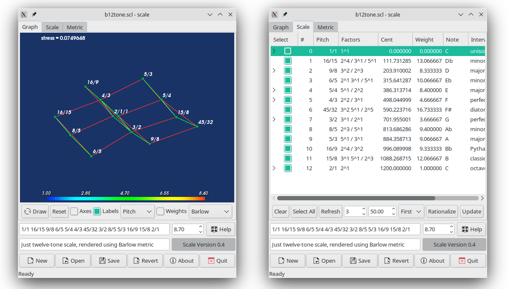

Albert Graef aggraef@gmail.com
July 2022
This is the Lua version of the Scale program. This program was first written around 2010 in the author's Pure programming language. However, the Pure version has since suffered from a crashing bug which affects applications using 3D rendering (as Scale does). Hence the port to a different language environment which doesn't have these issues. The Lua port aims for 100% compatibility with the Pure version. The graphical user interface, the functionality, and the file format are all virtually identical. The port is still new, though, it needs further testing and may still have bugs.
Why Lua? I enjoy programming in Lua. I think that it's a nifty little language with a good design and pretty syntax, very capable, yet easy to learn. It also has a light-weight runtime and is readily available on many platforms, which lets you get up and running quickly.

Scale is a program for rationalizing and visualizing musical scales. The original version of this program was written in 2001 and documented in the author's report "Musical scale rationalization: a graph-theoretic approach", but this version isn't available on the web any more. The present version is a complete rewrite in the Pure programming language, now ported to Lua. Compared to the original version, it has a nicer GTK+ GUI (using Gnocl) and visualization component (using VTK), and the automatic scale rationalization algorithm has been improved to make it easier to use.
The scale program generally computes disharmonicities using an additive measure which assigns basic "indigestibility" values to prime numbers. A simple example of this approach is Euler's gradus suavitatis, but the scale program provides various different measures derived from the works of Euler and the contemporary composer Clarence Barlow. (The notion of "prime indigestibilities" and the idea of automatic scale rationalization are in fact due to Barlow.)
The harmonic distance of two rational scale tones x and y is then given by the disharmonicity of the (rational) interval x/y. If this value is large then the interval contains many and/or large prime factors and is thus considered "complex" and "disharmonious". Conversely, if the value is small then the interval is considered "harmonious" which means that the two involved scale tones x and y are closely related to each other.
As it turns out, the resulting notion of harmonic distance is actually a metric in the mathematical sense, and can thus be used to visualize the harmonic relationships in a scale. Moreover, harmonic distances also facilitate the manual or automatic generation of rationalizations of a given non-rational scale. Please see the author's report for a detailed account on the theory behind this.
Copyright (c) 2010-2022 by Albert Gräf, all rights reserved.
The scale program is free software: you can redistribute it and/or modify it under the terms of the GNU General Public License as published by the Free Software Foundation, either version 3 of the License, or (at your option) any later version.
The scale program is distributed in the hope that it will be useful, but WITHOUT ANY WARRANTY; without even the implied warranty of MERCHANTABILITY or FITNESS FOR A PARTICULAR PURPOSE.
Please see the accompanying COPYING file for the precise license terms. The GPL can also be read online at http://www.gnu.org/licenses/.
NOTE: The sources include the file intnam.par which is Copyright (c) 2010 by Manuel Op de Coul (coul at huygens-fokker dot org) and redistributed here with his permission. The GNU General Public License does not apply to this file. The intnam.par file may only be redistributed unchanged with these sources, for any other use please write to coul at huygens-fokker dot org.
The scale program uses various 3rd party software for its GUI and numerical algorithms. You'll need:
Except for VTK, you'll need fairly recent versions of all these. Lua 5.4, Octave 6.4, and Tcl/Tk 8.6 (+ Gnocl 0.9.96) have been tested and are known to work on Linux. For VTK I recommend using the older VTK 6.3 version, which still includes the full set of VTK Tcl libraries, which are essential to use VTK in programming environments not directly supported by VTK, such as Lua.
Since ready-made packages for Gnocl and VTK 6.3 can be hard to find these days, I provide packages for Arch (Gnocl, VTK) in the AUR (Arch User Repositories), and packages for Debian and Ubuntu (Gnocl, VTK) at the OBS (Open Build Service).
The program also requires Lua bindings to Tcl/Tk and Octave to work. Since I couldn't find anything suitable in the archives, I ported over the corresponding Pure modules. You can find these as lua-tk and lua-octave on GitHub. They can be installed as a luarocks module, or with make && sudo make install. Please check the README files on GitHub for details.
Finally, you'll need inspect. This is a popular 3rd-party module for pretty-printing arbitrary Lua data. If you don't have this installed, you can either get it using luarocks, or download it here: inspect.lua. You can also run sudo make install-inspect to have this done automatically; it will check whether the module is installed already, and copy the module to the proper directory on Lua's package path if needed.
Currently the program is only known to work on Linux. Porting to other platforms won't be a piece of cake, but is certainly doable. Ready-made binaries for Lua, Tcl/Tk, VTK, and Octave exist on a variety of platforms, but getting these to work together nicely might be a challenge on some systems like Mac and Windows. (At the very least, you'll have to port lua-tk and lua-octave, and get hold of suitable builds of Gnocl and VTK for your platform.) If you do, please let us know.
There is no need to install this program, you can just run it from the source directory as lua scale.lua or ./scale.lua, or use ln -s to create a symlink to scale.lua in some directory on your path, in order to run it from anywhere.
For a system-wide install, you can run the usual sudo make install, which will put the script and data files under /usr/local/share/scale, and create a link to the scale.lua script named /usr/local/bin/scale, so that you can launch the program by just typing scale. The default installation prefix /usr/local can also be adjusted as needed by setting the prefix variable in the Makefile accordingly. To uninstall the program at a later time, just type sudo make uninstall.
The scale program reads and writes files in the Scala scale file format. (The Scala file format is the de facto standard for musical scale data. Please check the Scala website for details on Scala and its big repository of scale files.) To open a scale (.scl) file, use the Open button in the main window, or specify the file on the command line, e.g.:
./scale.lua scl/b12tone.scl
The main window is divided into two panes, a notebook widget with the Graph, Scale and Metric tabs in the upper half, and a box with various entry fields, global parameter values, a strip of buttons and a status line in the lower half. The status line gives feedback during operations which may take a while to complete (in particular, when drawing and rationalizing a scale). The Graph tab displays a 3-dimensional rendering of the scale. The Scale and Metric tabs have additional related information about the scale points and the disharmonicity metric of the scale.
You can also invoke the scale program with the -g option to have the graph view displayed in a separate window, in which case the controls on the Graph tab can be found in the main window instead. This mode improves portability, as embedding a VTK view might not be supported on all platforms. It also enables you to look at the graph and the scale or metric view at the same time.
Scales can be loaded and saved with the Open and Save buttons at the bottom of the main window, see File Operations below for details. If you load a plain Scala file, you will be prompted if you first want to draw it. This is also needed to generate some useful information on the Scale and Metric tabs, so you should answer Yes there. You can also just enter a scale in Scala format (ratios as p/q where p and q are positive integers, cent values as nonnegative floating point values) in the upper entry field in the lower half of the main window, and then click the Draw button to render the scale. Some already rendered examples are included in the scl subdirectory in the sources, so have a look at those to get an idea how this works.
Note that the Graph and Metric tabs will only have interesting information if all scale points are rational; this is required to compute the disharmonicity metric. In this case the scale display shows an approximation of the harmonic distances of the scale points in three-dimensional Euclidean space, computed using a multidimensional scaling (MDS) algorithm (also described in the author's report). The necessary operations to create a rational scale from any input scale are provided, see Rationalizing a Scale below.
To exit the program, click the Quit button at the right end of the button strip (equivalently, you can also use the Alt-Q keyboard shortcut), or just close the main window. The About button in the lower part of the main window (keyboard shortcut: Alt-B) shows some useful information about the program, while the Help button (keyboard shortcut: Alt-H) displays this manual in a web browser.
The file operations can be found in the button strip at the bottom of the main window.
New, Open, Save: Creates a new, loads an existing, or saves the current scale, respectively. With the latter two commands you are prompted to enter a scale (.scl) filename.Revert: Reverts to the most recently saved version of the loaded scale. This provides a quick way to revert your changes after editing the scale or experimenting with different scale rationalizations.Quit: Exit the application.Holding the Alt key underlines the available keyboard shortcuts in the button texts. So, e.g., the Open command can be invoked with Alt-O, Save with Alt-S, etc.
The scale program can also save scales as binary sysex (.syx) files in the MIDI Tuning Standard (MTS) format, so that you can easily retune any MTS-compatible synthesizer to a scale by just sending the corresponding sysex file to it. Currently this only works with octave-based scales which have exactly 13 scale points (including the base tone 1/1 and the octave 2/1). The written sysex files follow the MIDI Tuning Scale/Octave Extensions, please check the MTS documentation for details.
To save a scale as a sysex file, simply invoke the Save operation as usual. When prompted to enter the scale filename, edit the filename so that it ends in the extension .syx, then press Save. A special dialog will appear which allows you to choose various MTS format options. Adjust these to your liking and press Save again (you can also cancel the operation at this point). The available MTS format options are as follows:
Realtime: If this option is checked, a realtime sysex message will be written, otherwise a non-realtime message. Note that in either case, the tuning changes will take effect immediately if the sysex file is sent to an MTS-capable synthesizer. However, realtime messages will also affect already sounding notes, whereas non-realtime messages only apply to new notes played after the message is sent.Encoding: This is a combobox which allows you to pick the desired encoding of the MTS message. MTS octave tunings can be encoded in either 1-byte or 2-byte format, meaning that each tuning offset is represented as one or two bytes, respectively. This affects both range and precision of the tuning offsets, please check the MTS documentation for details. Usually it is a good idea to pick the 2-byte encoding, since it offers a wider range (-100..+100 ct) and better precision. However, if your synthesizer only supports the 1-byte encoding, or if you are really concerned about transmission bandwidth then it may be necessary to choose the 1-byte encoding instead. (Note that 2-byte messages need roughly twice the size of 1-byte messages; this may affect how quickly the messages are processed, although this is rarely a problem with modern hardware any more).Base: This spinbox enables you to select the reference tone of the tuning, given as the index of a scale point in the range 0..11. A value of 0 indicates that the base tone of the scale will be at its nominal tuning (i.e., at a tuning offset of 0 ct). The spinbox allows you to change this as needed. Most of the time, you will want to choose the value 9 to have the 9th scale tone (which usually corresponds to the chamber pitch A) at a tuning offset of 0 ct, so that A4 will be exactly at 440 Hz; this shifts the other tuning offsets accordingly.By default, realtime messages and 2-byte encodings are enabled, and the base tone is set to 9, which should be sensible defaults in most cases.
Note that in order to actually use the resulting sysex files, you need an MTS-compatible synthesizer. Unfortunately, the MIDI Tuning Standard isn't supported by many hardware synthesizers, so you'll probably have to use a software synthesizer instead. A good MTS-compatible software synthesizer is Fluidsynth which uses SoundFonts and has a nice graphical frontend called Qsynth. It is available for Linux, Mac OS X and Windows.
In addition, you'll need a program which can read sysex files and transmit them to the synthesizer. There are many such programs freely available for different platforms, such as Simple Sysexxer on Linux and Midi-Ox on Windows. Also, many MIDI sequencing programs have this capability.
At the bottom of the main window there are two entry fields. The first field is for the scale itself, while the second one is for a short plain text description of the scale. You can write anything in the second field (you can also just leave it empty), but the scale data must follow the Scala conventions:
p/q, where p and q are positive integer values, denotes an interval by its frequency ratio, e.g.: 1/1 (unison), 3/2 (fifth), 2/1 (octave), etc.0.0, 701.955 or 1200.0 denotes a Cent value (percent of an equal-tempered semitone).No other values are allowed in this field. Different scale tones are usually entered in ascending order, starting with the base tone 1/1 or 0.0, with whitespace in between. For instance: 1/1 100.0 3/2 1200.0. (Note that the base tone is implicit in the Scala file format, so it is not actually stored in scale files. That's why even if you don't enter the base tone it will be added automatically.)
To the right of the scale entry field there's another control, the "weight threshold" spinbox which allows you to enter a harmonic distance threshold used to render the scale graph in the Graph tab, and to determine rational tuning alternatives in the Scale view. You'll have to adjust this value accordingly when drawing or rationalizing a scale.
Once a scale has been entered or loaded, you can draw it by pushing the Draw button on the Graph tab. This produces a graphical rendering of the scale. The graphical rendering is also stored in the scale file when you save it. Next time you load this file, the same graphical view is recreated automatically.
If the scale contains any Cent values, the graphical display is a simple chain of the scale points in the order in which they are given. If all scale points are rational, however, then you'll see a proper 3-dimensional rendering of the scale, called a "harmonicity graph." The nodes of this graph are the scale points and the edges represent color-coded harmonic distances between some pairs of scale points (see below).
Note that the graphical rendering isn't arbitrary, but approximates the harmonic distances (shown on the Metric tab) between scale points by their Euclidean distances in the drawing, so that it becomes easy to analyse the harmonic relationships in the scale. This is achieved using a technique called "multidimensional scaling" (MDS), see the author's report for details.
The graphical view can be rotated, panned and zoomed with the mouse, so that you can take a look at the scale from all angles. To these ends, press a mouse button in the graph window (left for rotation, middle for panning, right for zooming) and, with the mouse button still pressed, move the mouse cursor in any direction. Moving the mouse cursor with the left or middle button pressed rotates or moves the view in the corresponding direction. To zoom in and out, with the right mouse button pressed move the mouse cursor up and down, respectively.
If the graph view is shown in a separate window, and the window has the keyboard focus, the following keyboard commands are recognized:
r: Resets the view to the default camera position (horizontal x and vertical y axis, with positive z coordinates in front).j: Switches to an alternative "joystick" mode in which you only have to press the left/right/middle mouse button inside the view to rotate/pan/zoom.t: Switches back to the default "trackball" mode in which you drag the mouse cursor with the left/right/middle mouse button to rotate/pan/zoom.Various controls for the display can be found in the strip at the bottom of the Graph pane (or in the main window below the Scale/Metric pane if the graph is shown in a separate window):
Draw: Updates the scale information and redraws the scale. Progress will be shown in the progress bar in the main window (to the right of the scale description field). You can run this as often as you want, e.g., after editing the scale. Also, note that the MDS algorithm starts from a random start embedding, so for some scales you might get different renderings when you redraw the scale.Reset: Reset the camera position (same as the r key in the graphical view, see above).Axes: Enables or disables x, y and z axes display in the view.Labels: Enables or disables the node label display which shows information about the scale points in the graph.Node label type: A combobox which lets you choose between "Pitch" (show ratios or cent values; this is the default), "Factors" (prime factors of ratios), "Cent" (cent values), "Note" (note names, if known), "Interval" (interval descriptions, for known intervals) and "Ordinal" (scale index). These items have the same meaning as the corresponding columns on the Scale tab, see The Scale View below for details.Weights: Enables or disables the edge weight display, which shows the harmonic distances between scale points.Edge weight function: A combobox which lets you choose between various harmonic distance functions, currently: "Barlow" (Barlow's indigestability metric) and "Euler" (Euler's gradus suavitatis). The other functions are variations of these (the "/2" versions set the harmonic distance of octaves to zero, and the "Log" variations take the decadic logarithm of the Euler and Barlow metrics). Changing the weight function produces different drawings and information on the Scale and Metric tabs, so you're prompted to redraw the scale when changing this value.Besides these, the already mentioned "weight threshold" spinbox to the right of the scale entry field also influences the display of the harmonicity graph. Only those edges between scale points will be drawn whose harmonic distance does not exceed the value given in the spinbox. Moreover, the edges are color-coded (blue denotes low, red high harmonic distances).
The Scale tab shows detailed information about the current scale in the form of a table whose columns include the following information:
Select: This column allows you to select pitches for the rationalization algorithm, see the comments below and Rationalizing a Scale for details.#: Ordinal numbers (starting at zero = base tone).Pitch: The ratio or cent value, as given in the scale entry field.Factors: The factorization of the pitch, if it is rational.Cent: The corresponding cent value.Weight: The disharmonicity value of the interval (for rational pitches only), as given by the weight function on the Graph tab.Note: The note name, if available.Interval: The name of the interval from the Scala intnam.par file, if available.Note names are computed automatically from a factorization of the ratios, assuming a "standard" tuning for the prime factors. At present, this is only implemented for rational pitches with the prime factors 2, 3, 5, 7 and 11, i.e., for "11-limit" pitches. 1/1 always denotes the base note C, and the other note names are computed relative to that.
The first column in the scale view allows you to select both scale points and the corresponding tuning alternatives. Selected scale points are considered "locked" for the purpose of scale rationalization. By default, all scale points are selected which are rational already. Also, for scale points for which alternative tunings are available, there is a tiny arrowhead in this column. Clicking on the arrowhead symbol expands the corresponding scale point and shows the available candidate tunings.
You can also click on the column headers to sort the scale view based on the values in the corresponding column. This is most useful for the numeric columns (#, Cent and Weight). By default, the table is ordered by ordinals (#), meaning that the scale points are listed in the order in which they are written in the scale entry field. Clicking on a column title once sorts the table in ascending order. Clicking the same column title again reverses the order so that the values in the column are listed in descending order.
At the bottom of the Scale tab there is a strip with operations and parameters for selecting scale points and alternative tunings and controlling the rationalization algorithm:
Clear: Deselect all scale points and alternative tunings.Select All: Select all candidate tunings for which the corresponding scale point is not selected (i.e., unlocked).Refresh: Refresh the scale display (in particular, this updates the available candidate tunings). This is usually done after changing the number of candidate tunings and tuning tolerance parameters (see below) as well as the weight threshold parameter in the main window.Number of tuning alternatives: A spinbox which allows you to select the maximum number of alternative tunings to be shown for each scale point.Tuning tolerance: Another spinbox with which you choose the maximum tuning tolerance for the alternative tunings for each scale point.Rationalization heuristic: This lets you choose between different candidate tuning selection heuristics for the automatic rationalization algorithm. The present implementation provides two alternatives, "First" and "Best".Rationalize: Automatic scale rationalization algorithm.Update: After selecting some alternative tunings, clicking this button updates and redraws the scale in the main window accordingly.Besides these, the "weight threshold" spinbox to the right of the scale entry field determines which tuning alternatives are shown for each scale point. Only tuning alternatives with a disharmonicity value of at most the threshold value are shown. Moreover, for each scale point the table shows at most n tuning alternatives in the range c-tol ... c+tol, where c is the cent value of the scale point (as given in the Cent column of the table), and tol and n are the tuning tolerance and the number of tuning alternatives, as given by the corresponding spinboxes.
The order of the alternative tunings for each scale tone depends not only on their nominal disharmonicity values but also on their absolute deviation from the scale point in cents. To these ends, the scale program computes "weighted" disharmonicity values using a formula by Barlow, described in the report. (The idea behind this is that the nominal disharmonicity values are scaled using a Gaussian bell curve which has its center at the current pitch of the scale point in Cents.) The first tuning alternative shown for a scale point is thus the "best" rational approximation of the scale tone according to this criterion, which is a compromise between harmonicity and tuning accuracy.
For rational scales, the Metric tab shows the harmonic distance metric used in drawing and rationalizing a scale. It takes the form of a matrix which shows for each pair x,y of scale points their harmonic distance, i.e., the disharmonicity of the interval x/y between the scale points. The weight function used to determine these values can be chosen with the "edge weight function" combobox on the Graph tab.
If a scale isn't rational yet then it is not possible to analyze the interval structure of a scale since this requires knowing the rational relationships between the scale tones. On the Scale tab you find the necessary tools to rationalize a scale using the following methods:
Update to update the scale data and redraw the scale. You can select more than one tuning alternative for each scale tone. In such a case the first alternative will be chosen, depending on the current order of the alternatives in the table. Thus the easiest way to quickly obtain a rationalization is to just click Select All and then Update.Update as with the manual method to update the scale using the computed solution.With either method, selected scale points are considered locked, i.e., they will not be modified by Rationalize and Update. (However, the automatic rationalization algorithm does take into account locked rational scale points when computing the eligible tuning alternatives.) By default, rational scale points are selected and thus considered locked. If you want to re-rationalize these as well, you first need to deselect them in order to unlock them. The quickest way to do this is to click the Clear button which deselects all scale points (as well as all tuning alternatives). Then use Select All to select all tuning alternatives (or select the ones that you want manually) before running Rationalize and/or Update.
The Rationalize command employs a backtracking clique search algorithm which explores exponentially many possibilities in the worst case and thus may be very slow, depending on the number of available tuning alternatives. To deal with this, you may try to restrict the number of tuning alternatives or fix some tunings manually beforehand.
You can also just run the algorithm and interrupt it at any time by hitting the Rationalize button (which is now labelled Interrupt) again. The progress of the algorithm towards an optimum solution which rationalizes all unlocked scale points is shown in the progress bar in the main window. Usually, the algorithm will converge to a local optimum pretty quickly (indicated by no further changes in the progress bar), at which point you may interrupt the algorithm and see whether the computed solution provides at least a viable partial rationalization of the scale.
The rationalization algorithm can also be adjusted by employing different search heuristics. You can find these in the Rationalization heuristic combobox. In the current program version, only two search heuristics are provided:
First: Scale points and tuning alternatives are considered in the order in which they are shown in the table. This strategy works pretty well if enough "good" candidate tunings are available and is the default.Best: This strategy selects tuning alternatives dynamically in order to minimize the total disharmonicity in the chosen rationalization. This tends to produce overall better solutions, but is slower than the First strategy and may also produce "funny" tunings for some scale points at times.Future versions of the program may add more search heuristics as we find new ways to guide the search towards good solutions. But note that the scale rationalization problem is inherently difficult (NP-hard in computer science parlance, see the report for details) and thus no search heuristic can guarantee to find good solutions quickly in all cases (unless P=NP, of course, but this is considered very unlikely by most experts).
To summarize, here is an outline of the basic steps of the rationalization process:
Refresh until a suitable set of tuning alternatives is shown.Clear if you want to just re-rationalize everything.Select All to select all tuning alternatives. (This also expands the corresponding scale points if necessary to show all selected alternatives.)Rationalize to try an automatic rationalization. (Hit the same button again to interrupt it if it takes too long.) You might need to increase the weight threshold and/or fine-tune the selection of tuning alternatives to obtain a satisfactory result using this method. (If you already selected some suitable tuning alternatives that you want to use, you can also just skip this step and directly proceed to step 5.)Update to update the scale and redraw it.Revert to revert to the original version of the scale and start over.